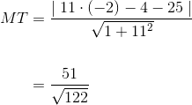
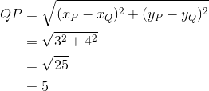
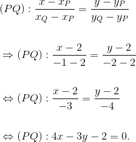

Distanța de la un punct la o dreaptă și arii
Distanța de la un punct la o dreaptă
Știm că distanța de la un punct la o dreaptă este lungimea dintre acel punct și piciorul perpendicularei de pe dreaptă dusă din acel punct. O formulă pentru a calcula această distanță va fi dată în cele ce urmează.
Fie  și dreapta
și dreapta  .
.
Definiția G30: Distanța de la un punct la o dreaptă
- Distanța de la punctul
 la dreapta
la dreapta  este:
este:
 .
.
- Dacă ecuația dreptei are altă formă, cum ar fi:
,
atunci distanța de la punctul la dreapta  este:
este:
.
Arii
Formulele pentru ariile poligoanelor importante sunt cunoscute deja, dar de data aceasta le vom calcula cu ajutorul formulelor recent studiate.
Astfel, avem:
- Triunghi
.jpg)
Formula pentru arie este:
.
- Paralelogram
.jpg)
Aria se calculează astfel:
.
Observație:
Pentru cazurile particulare de paralelogram (dreptunghi, pătrat, romb) calculele se fac analog; vom aminti doar formula de aflare a ariilor acestora.
- Dreptunghi

.
- Pătrat

.
- Romb

sau
- Trapez

.
Aplicații
Pentru a înțelege mai bine noțiunile introduse mai sus, profesorii noștri ți-au pregătit următoarele exerciții și probleme rezolvate complet și pas cu pas, astfel încât tu să asimilezi mai repede formulele date.
Fie punctele , , , care reprezintă vârfurile unui triunghi. Să se calculeze aria acestui triunghi.
Rezolvare:
Avem următorul grafic:
.jpg)
Calculăm lungimea bazei triunghiului, dată de  :
:
Scriem ecuația dreptei :
.
Distanța de la punctul la dreapta este:

Având baza triunghiului și înâltimea din vârful opus bazei, putem calcula aria triunghiului astfel:
.
- Fie punctele care reprezintă vârfurile unui paralelogram. Să se calculeze aria acestui paralelogram.
Rezolvare:
Pentru început, să reprezentăm grafic cele patru puncte date:

Calculăm lungimea bazei :

Scriem ecuația dreptei  :
:

Distanța de la punctul la dreapta este:
Atunci, aria acestui paralelogram este:
.
- Fie punctele
 care reprezintă vârfurile unui trapez. Să se calculeze aria acestui trapez.
care reprezintă vârfurile unui trapez. Să se calculeze aria acestui trapez.
Rezolvare:
Pentru început, reprezentăm punctele date într-un sistem de coodonate  astfel:
astfel:

Din imagine observăm că .
Calculăm lungimea bazelor  , respectiv :
, respectiv :
Scriem ecuația dreptei :
Distanța de la punctul la dreapta este: